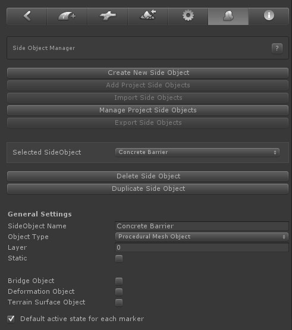
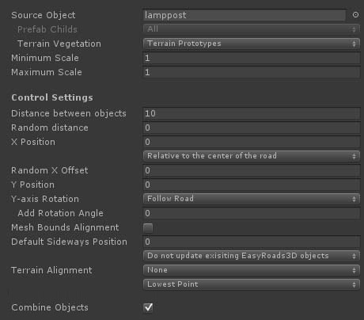
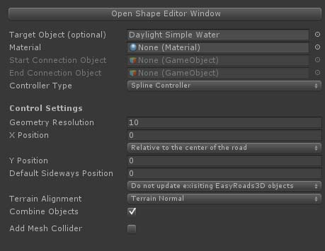
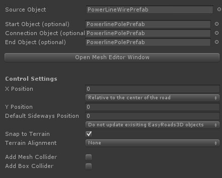
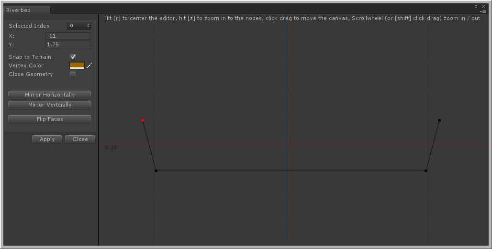
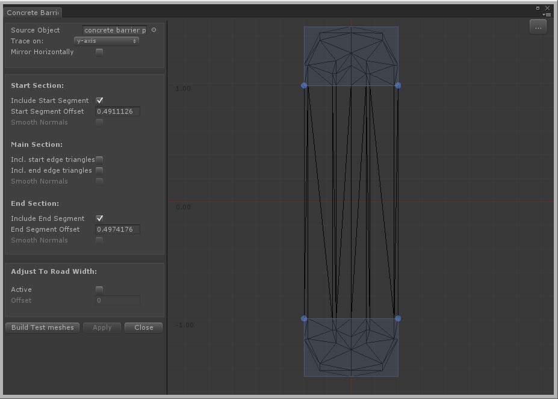

The side objects system in v3 can be accessed through the Inspector toolbar

- Create New Side Object: Click this button to add a new side object
- Add Project Side Objects: All new side objects in a scene are stored both in the scene as in the assets folder (/Assets/EasyRoads3D/Resources/ERSideObjectsLog). This button will be active when there are side objects available in the assets folder that are not yet added to this scene. The button will open the side object importer window with a list of all available side objects. This way you can keep the scene specific side objects list clear and concise.
- Import Side Objects: Importing side objects from another project is supported. After importing the side object unity package (see below in Export Side Objects), Click this"Import Side Objects" button. The Side Object Import window will open. Drop the prefab with side object presets (see below in Export Side Objects) in the window. All side objects will be listed, you can chose which side objects to import [website tutorial]
- Manage Project Side Objects: Click this button to remove side objects permanantly from the project
- Export Side Objects: Click this button to export side objects. The side objects that should be exported can be selected. After clicking the Export button you will be asked to set a location and name for the created prefab. This should be inside the assets folder. This prefab including all the dependencies will be exported to a unity package [website tutorial]
- Selected Side Object: The currently active side object
- Delete Side Object: Click this button remove the side object from the list. It will also remove the side object from all road objects
- Dupicate Side Object: Use this to create a copy of the selected side object. This is useful to create for example left and right of the road variations of a side object
- Side Object Name: The name of the side object
- Object Type: The side object type. Three different side object types are available. The Inspector will update depending on the selected side object type. The options are explained further below
- Layer: You can set the layer to which the generated gameobject should be assigned
- Static: Check this when the generated gameobject should be marked as static
- Bridge Object: Marking a side object as a bridge side object will display bridge specific settings.
- Deformation Object: The generated side object will be used to flatten the terrain according the generated shape. It will not render in Build Mode. You can use for example to create complex river bed shapes.
- Terrain Surface Object: Toggle this on when the side object is used as a terrain mesh overlay to add detail to the terrain. It will automatically trigger adjustments to how the terrain itself is flattened in these areas.
- Default active state for each marker: uncheck this for side objects that should only be active on a small selection of markers. It will save time setting up the active/inactive state per marker
- Update Active Scene Instances: This button is located at the bottom in the Inspector and will enable after changes. Click this button to auto update all scene instances of the selected side object
- Mesh Object
Mesh Object Bridge
- Shape Object
- Procedural Mesh Object
Mesh Object:
This side object type can be used to instantiate objects along the track, objects such as lampposts, trees, rock formations, seperate unconnected mesh based fence objects, barriers, etc.

- Source Object: Drag the gameobject / prefab you want to use for this side object in the corresponding slot
- Prefab Childs: This feature is enabled when more then 1 child object exists in the prefab. So the correct way to use this feature is to setup your prefab in a way that all individual objects are childs of the parent prefab. You have 3 options:
-
All: this will instantiate all child objects per new instance
- Child Sequence: this will go through all child objects according the child index and instantiate a single child object per instance
- Random Mesh:
this will randomly select a child object per instance. If you want specific objects to be instantiated more often, simply duplicate them in the prefab so there is more chance that they will be chosen.
- Terrain Vegetation: The combobox will show all tree prototypes currently added to the terrain object. Selecting one of the prototypes will move the associated prefab to the Source Object slot. When switching to Build Mode, all instantiated trees will be added to the terrain vegetation data with all the the advantages of for example tree billboarding, etc.
- Maximum Scale: Use this to optionally set the maximum scale of the instantiated object. A random scale between the Minimum and the Maximum Scale will be chosen for each tree instance
- Minimum Scale: Use this min/max slider to set the minimum maximum scale boundaries for vegetation side objects. A random scale between the two will be chosen for each tree instance
- Distance between objects: The distance between instantiated objects
- Random Distance: This will add a random distance between 0 and the entered value
- X Position: This will move the object sideways relative to the selected to the selected option from the dropdown. Options are:
1. Relative to center of the road
2.
Relative to the left side of the road
3. Relative to the right side of the road
- Random X Offset: This will add an additional random offset to the X Position value.
- Y Position: This will move the object upwards
- Y-axis Rotation: This controls the rotation on the y-axis. Options are "Follow Road", "Fixed" and "Random".
- Add Rotation Angle: This will add the entered value to the caluclated rotation value and can be used to fine tune the rotation of side objects that are for example used in bends.
- Mesh Bounds Alignment: By default objects are rotated based on the forward direction at that point. This works well for side objects with a small bounding box sizes on the X and Z axis, lampposts etc. but less accurate for objects with a bigger bounding box on the X and Z axis, for example individual fence objects. Switching on this option will align the instantiated object exactly according the size of the object.
- Default Sideways Position: This defines the default position to the right or left of the center of the road. This position can be adjusted for each marker, the side object will be build on its own spline curve relative to the main spline shape and is useful to have side objects such as fences move away and towards the roads. To avoid overwriting marker specific values, updating this value here will by default not affect exisiting instances. You can force changes by selecting the appropriate option from the dropdown.
Note: When using the Sideways Position option the side object will be generated on its own spline shape relative to the road. Do not use this option when you want the side object to follow the road at a fixed distance (such as road guard rails). Instead use the above X Position option for this type of side objects.
- Snap to Terrain: By default the Y position of side objects are aligned with the road at that position. This will work fine for side objects near the road and will also build these side objects correctly when active on bridge segments. For side objects like fences etc., especially when using the above Sideways Distance option per marker to move the object towards and away from the road, you usually want to snap the side object to the terrain. That is what this option does. For non road related objects, the status of "Snap to Terrain" in the settings of that object has priority.
- Terrain Alignment: you can align side objects with the terrain, options are:
-
None
- Terrain Normal
-
Path Forward
-
Path Normal
Note: When using the Sideways Distance option (per marker), a new spline shape will be created. This means that the connection with the road shape is lost, therefore the Path Forward and Path Normal options will no longer work accurately. The Terrain Normal option however is almost identical and will only have different results outside areas where the terrain is not flattened according the road shape.
When "None" is selected and "Mesh Bounds Alignment" (see above) is toggled on, the second dropdown will control the alignment according the terrain height covered by this instance which is useful to align for example paryicular types fences and walls with the terrain.
- Lowest Point: The instance Y position will match the lowest terrain point
- Highest Point: The instance Y position will match the highest terrain point
-
Average height: The instance Y position will match the average height
- Combine Objects: Depending on the used materials, this will combine all instantiated objects into a single object.
Bridge Object:
This is useful for bridges that should not adapt to the road shape, like standard motorway bridges. This type of side object is based on a fixed bridge model. When the Mesh Object type is selected and Bridge Object is toggled on, mesh bridge specific controls are displayed:

- Source Object: Drag the bridge gameobject / prefab you want to use for this side object in the corresponding slot
- Prefab Childs: This is operational. You can use this to randomly select a bridge prefab. Note that the base structure should be similar (height and length) for accurate results.
- X Position: You can use this to fine tune the final position.
- Y Position: You can use this to fine tune the final position.
- Bridge Height: The height difference between the markers of the top road and the markers of the bottom road.
- Marker Spline Control: The controller type of the marker for which this side object will be switched on. generally you want to use Straight XYZ for this. When activating the bridge side object for a marker the corresponding controller type will be updated automatically.
- Deformation Level Distance: The distance over which the terrain should be flattened from the road height to the original terrain height. This will automatically update the corresponding Start Level Distance and End Level Distance of the selected marker.
- Marker Indent Distance: This will automatically update the Indent values of the selected marker and the next marker according this value. This is a quick way to add variation to the terrain deformation near the bridge.
- Marker Surrounding Distance: This will automatically update the Surrounding values of the selected marker and the next marker according this value. This is a quick way to add variation to the terrain deformation near the bridge.
The buttons on the right of each control will be active when a road marker is selected with this side object active. Additional you can select the next marker and the corresponding markers of the road that passes underneath the bridge. When all these buttons are selected all buttons will be active and the values will be auto calculated from the current marker setup in the scene.
So to set this up it is recommended to create two roads crossing each other on a flat terrain. Activate the side object for the top road, position the next marker exactly at the "Bridge End" position, select both markers and raise them to the correct height relative to the bottom road. Select the bottom two markers as well, all buttons in the Side Object Manager are active, ou can now click the buttons to set the values.
To activate the Get Length button you can also temporarily add child objects to the source prefab at the exact marker positions, name these child objects "marker1" and "marker2". The Get Length button will be active. This is a more precise way to set the Bridge Length value. Afterwards you can remove these temprary child objects from the prefab.
When activating this bridge in the scene and selecting the same 4 markers you will see all the required alignment buttons in the Inspector (just below the toolbar) to quickly and accurately align the roads instantly so the bridge perfectly fits.
Shape Object:
This side object will procedurally create shapes along the track based on the 2D shape defined in the 2D editor window. This can be used to create for example the shape of river beds set to deform the terrain accordingly and the river surface mesh itself.

- Open Shape Editor Window: This will open the editor window which you can use to define the shape of the side object. See below or Click here for more info.
- Target Object: Optionally you can drag a prefab to this slot. This prefab will be instantiated and the procedurally created shape will be added to this prefab. This is useful if you want to create a shape with additional scripts attached. You can for example drag one of the Unity water prefabs to this slot and define a simple horizontal shape simulating the water surface. The final object will have all the water scripts and materials automatically attached, the mesh shape will be added procedurally.
- Material: The material that should be used for this side object. This is not required if you assigned a Target Object above with already materials set up.
- Start Connection Object: This can be used to attach a start game object to the shape. In v3 it is recommended to use the Procedural Mesh Object for side objects also including Start / End objects
- End Connection Object: This can be used to attach an end game object to the shape. In v3 it is recommended to use the Procedural Mesh Object for side objects also including Start / End objects
- Controller Type: (inactive) This controls the geometry structure and positioning, the options are "Clamp Left", "Clamp Right" and "Spline Controller". "Clamp Left" and "Clamp Right" will create geometry based on the resolution and vertice positions of the road geometry. "Clamp Left" will create the geometry at the left side of the road, "Clamp Right" will create the geometry at the right side of the road. When "Spline Controller" is selected the geometry will be created according the spline curve and the Geometery Resolution value below.
- Geometry Resolution: The distance between vertex rows. Use this to control the resolution of the geometry.
- X Position: This will move the object sideways relative to the selected to the selected option from the dropdown. Options are:
1. Relative to center of the road
2.
Relative to the left side of the road
3. Relative to the right side of the road
- Y Position: This will move the object upwards
- Default Sideways Position: This defines the default position to the right or left of the center of the road. This position can be adjusted for each marker, the side object will be build on its own spline curve relative to the main spline shape and is useful to have side objects such as fences move away and towards the roads. To avoid overwriting marker specific values, updating this value here will by default not affect exisiting instances. You can force changes by selecting the appropriate option from the dropdown.
Note: When using the Sideways Position option the side object will be generated on its own spline shape relative to the road. Do not use this option when you want the side object to follow the road at a fixed distance (such as road guard rails). Instead use the above X Position option for this type of side objects.
- Snap to Terrain: By default the Y position of side objects are aligned with the road at that position. This will work fine for side objects near the road and will also build these side objects correctly when active on bridge segments. For side objects like fences etc., especially when using the above Sideways Distance option per marker to move the object towards and away from the road, you usually want to snap the side object to the terrain. That is what this option does. For non road related objects, Snap to Terrain can be set in the object settings.
- Terrain Alignment: (inactive) you can align side objects with the terrain, options are:
-
None
- Terrain Normal
-
Path Forward
-
Path Normal
Note: When using the Sideways Distance option (per marker), a new spline shape will be created. This means that the connectio with the road shape is lost, therefore the Path Forward and Path Normal options will no longer work accurately. The Terrain Normal option however is almost identical and will only have different results outside areas where the terrain is not flattened according the road shape.
- Combine Objects: Depending on the used materials, this will combine all instantiated objects into a single object
- Add Mesh Collider: Activate this option to automatically add a mesh collider to the generated mesh
Procedural Mesh Object:
This side object type will procedurally create a mesh based on a source mesh. In the Mesh Editor Window you can split the source mesh in Start, Middle and End segments. This side object type can be used to create side objects such as fences, walls, guard rails but also complex bridges.

- Source Object: Drag the source mesh game object / prefab to this slot.
- Start Object: This object will be instantiated at the start (optional), see the PowerLine example
- Connection Object: This object will be instantiated at segment connections (optional), see the PowerLine example
- End Object: This object will be instantiated at the end (optional), see the PowerLine example
- Open Mesh Editor Window: This will open the editor window used to prepare the source mesh for the side objects system. See below or Click here for more info.
- X Position: This will move the object sideways relative to the selected to the selected option from the dropdown. Options are:
1. Relative to center of the road
2.
Relative to the left side of the road
3. Relative to the right side of the road
- Y Position: This will move the object upwards
- Default Sideways Position: (Inactive) This defines the default position to the right or left of the center of the road. This position can be adjusted for each marker, the side object will be build on its own spline curve relative to the main spline shape and is useful to have side objects such as fences move away and towards the roads. To avoid overwriting marker specific values, updating this value here will by default not affect exisiting instances. You can force changes by selecting the appropriate option from the dropdown.
Note: Source Prefabs with submeshes using multiple materials is currently not yet supported, this will be available in v3.3. Meanwhile please export the model so it imports with each material group added as a child object. That is supported.
Note: When using the Sideways Position option the side object will be generated on its own spline shape relative to the road. Do not use this option when you want the side object to follow the road at a fixed distance (such as road guard rails). Instead use the above X Position option for this type of side objects.
- Snap to Terrain: By default the Y position of side objects are aligned with the road at that position. This will work fine for side objects near the road and will also build these side objects correctly when active on bridge segments. For side objects like fences etc., especially when using the above Sideways Distance option per marker to move the object towards and away from the road, you usually want to snap the side object to the terrain. That is what this option does. For non road related objects, Snap to Terrain can be set in the object settings.
- Terrain Alignment: side objects can be aligned with the terrain, options are:
-
None
- Terrain Normal
-
Path Forward
-
Path Normal
Note: When using the Sideways Distance option (per marker), a new spline shape will be created. This means that the connectio with the road shape is lost, therefore the Path Forward and Path Normal options will no longer work accurately. The Terrain Normal option however is almost identical and will only have different results outside areas where the terrain is not flattened according the road shape.
- Add Mesh Collider: The MeshCollider componentwill be added.
- Add Box Collider: Box colliders will be added matching the bounds of eaxh segment
Tip: Use the H Key to toggle on/off the display of side object handles in Scene View
The shape editor window can be used to define shapes in 2D space for Shape type of side objects and will open after clicking the Open Shape Editor Window button in the Inspector.

Double click on the stage to add points (or Ctrl + double click to insert points). After adding the second point, points will connect.
- Selected Index: The index of the selected point. The v2 option to change indexes and reorder points is obsolete
- X / Y: The X and Y values of the selected point. The fields are editable for precise values
- Snap to Terrain: This will snap corresponding vertices to the terrain which is usefull for generating meshes that should blend with the terrain
- Vertex Color: The generated meshes will include vertex color info which can be used in the attached shader. Here you can optionally set the vertex color for each shape point.
- Close Geometry: This will connect the last point to the first
- Mirror Horizontally: This will mirror the points on the Y axis
- Mirrow vertically: This will mirror the points on the X axis
- Flip Faces: Click this button if it turns out the normals point in the opposite direction
- Apply: This will save changes and update all exisiting scene instances
The stage can be dragged by moving the mouse and pressing the left button. Zoom in and out using the scrollwheel or Shift+click+drag, hold Shift to select and move multiple roads
Shortcuts:
R: This will center the stage
Z: This will zoom the stage so the the bounding box of the entered points is completely visible
The mesh editor window is used to prepare the geometry structure for Procedural Mesh Object type of side objects and will open after clicking the Open Mesh Editor Window button in the Inspector.

The full mesh structure can be used for each segment or you can split the mesh in start and / or end segments and middle segments.
- Source Object: The mesh that will be used as the base for this side object
- Trace on: Depending on how the model is imported by Unity you may have to rotate the object.
Tip: The best way at the moment to handle this is by dragging the game object in the scene and look in the Inspector. Did Unity auto apply rotation values? In this case it is recommended to create a new prefab, add the model as a child to this prefab and apply the same rotation values to this child object in the prefab. Assign the new prefab as the source object. Check the demo project, the used assets are .obj files. Unity applies a 180 degree rotation on the Y-axis. That is why prefabs are used with the original mesh as the child, the child has a 180 degree rotation on the Y-axis.
- Mirror Horizontally: You can use this to, for example, quickly create left / right versions of side objects like guard railings. Simply duplicate the side object in the Inspector, open the editor window, check "Mirror Horizontally" and click the Apply button.
- Include Start Segment: Activate this checkbox to add a start segment.
- Start Segment Offset: This defines where the geometry should be split between the start and middle segment. The best way to do this is on the stage. Drag one of the blue bottom handles to the edge between the start and middle segment. The handles will snap to vertices within the snapping range.
- Smooth Normals: Activate this to generate smooth normals between segments.
- Incl. Start Edge Triangles: Sometimes you want the triangles exactly on the start edge to be part of the middle segment. Activating this checkbox will do that
- Incl. End Edge Triangles: Sometimes you want the triangles exactly on the end edge to be part of the middle segment. Activating this checkbox will do that
- Include End Segment: Activate this checkbox to add an end segment
- End Segment Offset: This defines where the geometry should be split between the middle and the end segment. The best way to do this is on the stage Drag one of the blue top handles to the edge between the end and middle segment. The handles will snap to vertices within the snapping range
- Smooth Normals: Activate this to generate smooth normals between segments
- Adjust To Road Width: Side objects such as bridges will adjust to the width of the road after activating the Active checkbox
- Offset: The offset value offset defines the position of the left and right edge of the road on this side object. The best way to set the offset is to horizontally drag the blue handle that become visible on the stage after activating this option
- Build Test Meshes: This will generate test objects of the start / middle / end segments in the scene. It is useful to check whether the segments are generated correctly. The segments are located in a new temporary game object "tmp folder" as a child of the main road network game object. These objects will be deleted automatically after clicking the Apply or Close button
- Apply: this will save the changes and auto update all existing instances in the scene
- Close: This will close the editor window
Procdural Mesh Editor: Start Segment Offset. For the best results, this requires vertices on the edges to be at the same Z position. If you do not get the expected results, you can verify this by doing the snapping from the other side, does it indeed result in different geometry? In that case it is recommended to double check the vertex positions in your modelling app.
For Start Sections it is recommended (depending on the geometry complexity) to drag the handles to above the snapping point, then move downwards until it snaps to the desired edge.
For End Sections it is recommended (depending on the geometry complexity) to drag the handles to below the snapping point, then move upwards until it snaps to the desired edge.
Tip: Start with simple objects to get familiar with the system and try all the different settings. Also, for the Procedural Mesh Objects start with simple meshes to get familiar with the Procedural Mesh Object system and check the set up of the meshes in the demo project have a look at the how start / end offsets are defined in the Mesh Editor Window.
All Side Objects used in a project are stored in the assets folder. All side objects used in a scene are stored in the scene data.
After creating a new scene and adding a Road Network object, the system will check whether side objects are available in the project, in that case you will be asked whether you want to add these side objects to the newly created Road Network Object. If you select No, you will still be able to import all these side objects or a selection of the project side objects. Manually importing a selection of the project side objects will help to keep the side objects list clear and concise.
After making changes to a side object, the associated side object in the project folder will be updated as well. When selecting the Road Network in a scene, the system will check for side object changes and will update the scene side object data. At this moment the scene itself is not updated, you can do this manually. In a next update you will be asked whether you want to update the scene in this case.
Road Types
You can assign side objects to road types in General Settings > Road Types. These side objects will be automatically activated for new instances of this road type.
[screenshot side objects list]
It will still be possible to activate / deactivate side objects for an exisiting road at any time in the Inspector by selecting that road (click one of the blue marker handles) and activating / deactivating the specific side object in the Side Objects section for the selected road.
Controlling side objects per marker
After selecting a marker the side object can be fine tuned in several ways. Select the marker and select the side object you want to change from the dropdown. A number of marker specific options are available.
- Selected Side Object: The below options will affect the currently selected side object int the dropdown
- Active: The active state for this side object for this marker
- Start Offset: The position relative to the marker where the side object should start. This option will be enabled when the previous marker is not active. This is useful for, for example, aligning bridges with the terrain. You can also set this value using the slider in scene view.
- End Offset: The position relative to the next marker where the side object should end. This option will be enabled when the next marker is not active. You can also set this value using the slider in scene view which will be visible when the previous marker is not active.
Tip: Use for example the R Key to toggle off the marker position handle when this is interfering with the slider handle.
- Include in Spline Shape: this is for side objects build along their own spline shape relative to the main track using Sideways Distance Settings. By disabling markers you can control the shape of the side object better in for example sharp corners.
- [obsolete] Sideways Distance: The Sideways Distance for this marker relative to the center of the track .
- Rotation Angle: Manual rotations useful to add for example damage to fences / barriers. The angle (amount of damage) can be entered here.
- Rotation Distance: The distance over which the rotation should take place.
- Rotation Center Position: The origin of the rotation on this marker section.
A wide range of side object examples are available in the additional free demo package including tutorials on our website
|